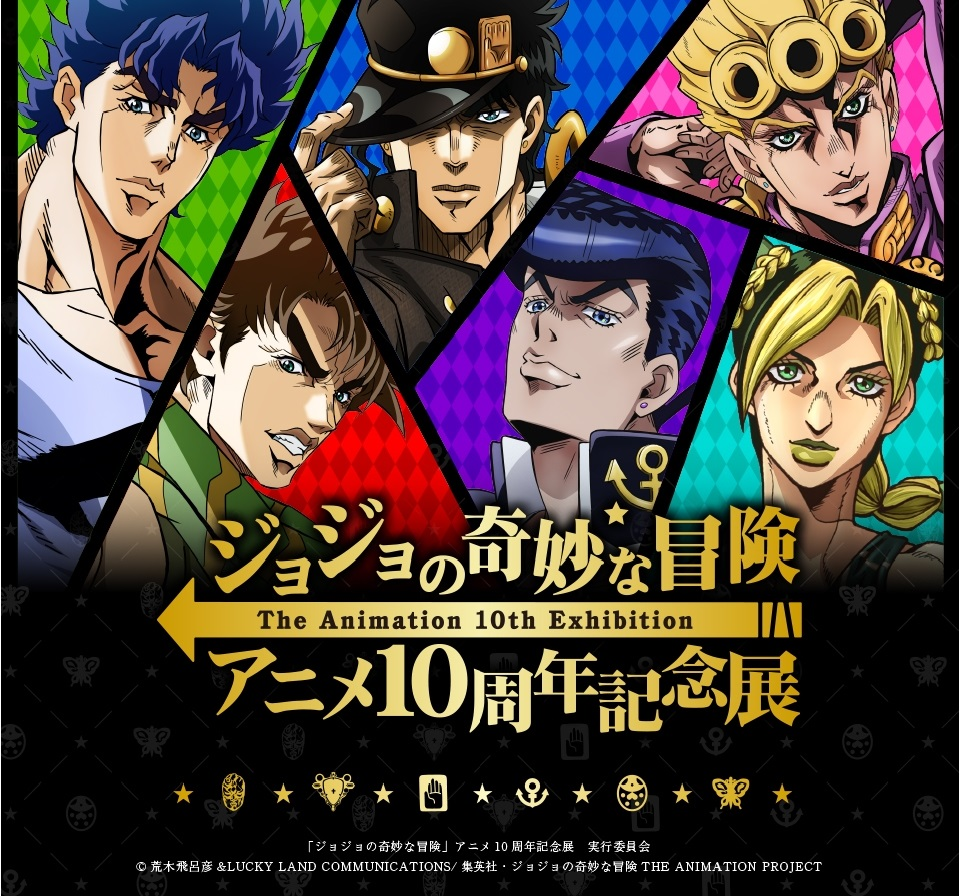
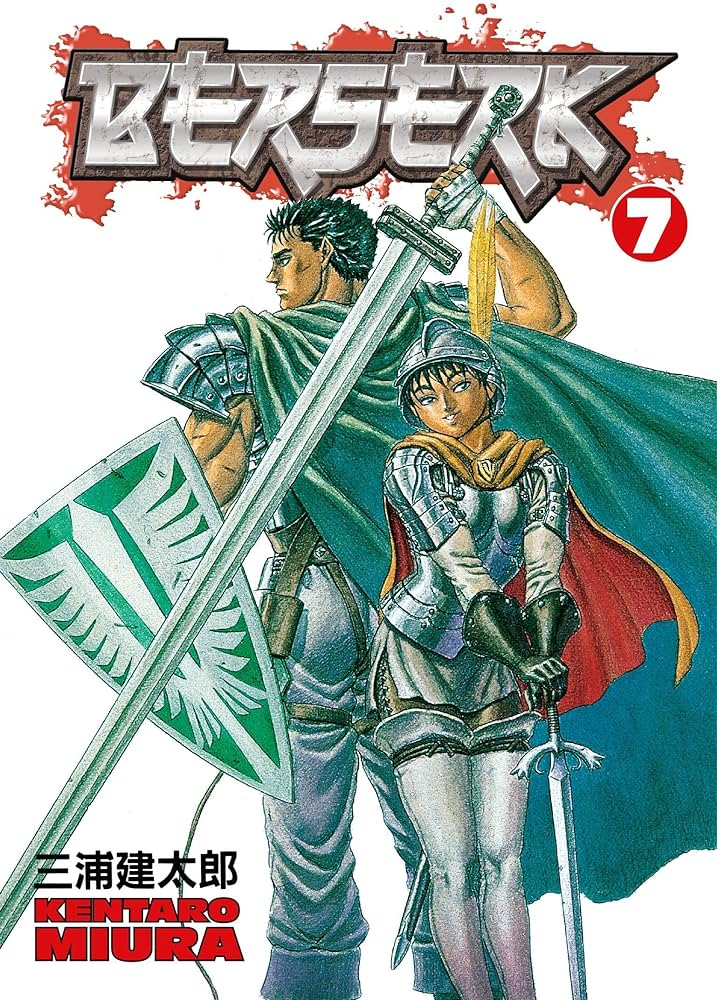

Anime 4 you
Seinen
Seinen (青年, literally "young man") is a genre of manga and anime that primarily focuses on young adult men. Signs often contain one or more of the following content: a complex plot, ranging from slightly surreal or mundane to very depressing Characters with profound properties (called multi-layered characters) Emotions are portrayed realistically The humor is sometimes twofold sometimes the level of fan service varied Unlike Shounen, seinen does not emphasize action and adventure, although these can be common elements. The female equivalent of seinenmanga is joseimanga.
jojo bizarre adventure
JoJo's Bizarre Adventure universe is a reflection of the real world with the additional existence of supernatural forces and beings. In this context, some people can transform their inner spiritual power into Stand , Another important form of energy is Hamon, a martial arts technique that allows the user to focus the body's energy toward sunlight through controlled breathing. The story in JoJo's Bizarre Adventure is divided into several parts with independent stories and different characters. Each of the series' main characters is a member of the Joestar family, whose primary descendants have a star-shaped birthmark above their left shoulder blade and a name that can be shortened to the title "JoJo". takes place in a single continuity that features a generational conflict arising from the rivalry between Jonathan Joestar and Dio Brando, while the final three installments take place in an alternate universe where Joestar's family tree is drastically altered .
Berserk
Guts is a lone warrior born from a hanged corpse and raised as a mercenary by his abusive adoptive father Gambino after the death of his adoptive mother Shisu. This comes to a head when Guts is forced to kill a drunken Gambino in self-defense, flees his group of mercenaries, and becomes a wandering salesman. His fearsome reputation attracts the attention of Griffith, the charismatic leader of a group of mercenaries known as the Band of the Hawk. Griffith forces Guts to join the group after defeating him in battle, Guts becomes his best warrior and main confidant. The group was hired by the Midland Kingdom to assist in the centuries-long war against the Chuder Empire. Guts learns of Griffith's desire to rule his own kingdom and the mysterious Behelit pendant. Behelit plays a key role when they are spared by Nosferatu Zodd, a monstrous immortal who leaves Guts a cryptic warning of a painful death for being Griffith's friend.
Vinland saga

Vinland Saga was set primarily in England in 1013 AD, which was largely conquered by the Danish king Sweyn Forkbeard. When King Sweyn was about to die, his sons, Prince Harald and Prince Canute, fought over the succession. Makoto Yukimura's Vinland Saga manga series features a mix of historical, apocryphal, and fabricated characters in its cast. The main characters are of Danish origin: Vikings are brought to England to support King Sweyn's invasion of the country. The series is divided into four story arcs focusing on Thorfinn, a young Viking who wishes to kill his superior Askeladd to avenge the death of his father, Thors. In later seasons, the older Thorfinn questions his guilt and decides to atone for it by finding the land of Vinland, a place he had been told as a child where people could live in peace. However, Thorfinn struggles to start a new life when he meets people involved in his life as a Viking who share the same interests as the young man.
Hellsing

Hellsing is named after and centered around the Royal Order of the Protestant Knights originally led by Abraham Van Helsing. Hellsing's mission is to find and destroy the undead and other supernatural evil forces that threaten the queen and country. The organization is currently led by Sir Integra Fairbrook Wingates Hellsing, who inherited Hellsing's leadership as a child after her father's death. She witnessed his death, transforming her from an innocent and shy girl into a harsh and deadly force. She is protected by the Hellsing family's loyal butler, Walter C. Dornez, his own mortal enemy, and Alucard, the original and most powerful vampire, who swore allegiance to the Hellsing family after being defeated by Van Helsing one hundred years before the story begins. These formidable guardians are joined at the beginning of the scenario by former police officer Seras Victoria, whom Alucard turned into a vampire.